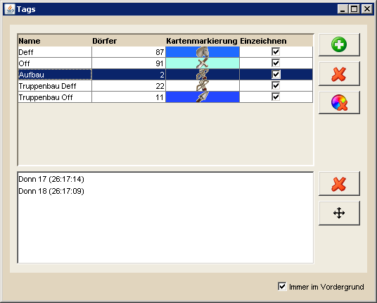
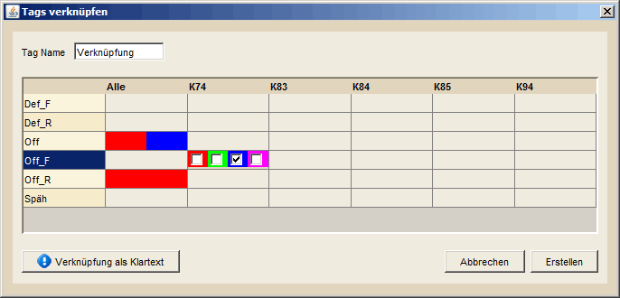
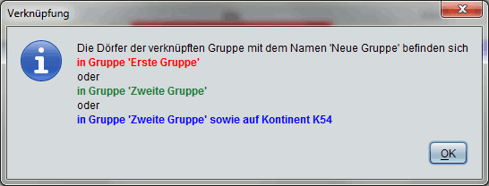

Tagübersicht |
|
|  | |
Die Tag-Ansicht gibt die Möglichkeit, importierte Gruppen, die in DS Workbench als Tags bezeichnet werden, zu konfigurieren. Hier kann man die Tags umbenennen oder ihr auf der Karte eingezeichnetes Symbol verändern. Dafür ändert man die Werte direkt in der Tabelle, woraufhin sie direkt auf die Karte übertragen werden. Auf der rechten Seite findet man mehrere Button die dazu dienen, einen neuen Tag zu erstellen, Tags zu verknüpfen (worauf später eingegangen wird), einen bestehenden Tag zu löschen, die Farbmarkierung auf der Karte zu entfernen oder gewählte Tags auf verschiedene Arten in die Zwischenablage zu exportieren. Das Entfernen des zu zeichnenden Symbols auf der Karte kann man direkt über die Tabellenzelle bewerkstelligen. |
|
Tags verknüpfen |
|
|  | |
| Durch die Möglichkeit Tags zu verknüpfen erhaltet ihr ein mächtiges Werkzeug, um eure Gruppen aus dem Spiel noch besser zu nutzen. Auf den ersten Blick schaut dieses Werkzeug recht unverständlich aus, allerdings werdet ihr schnell merken dass es das gar nicht ist. In den Zeilen der gezeigten Tabelle werden alle eure Tags aufgelistet, die ihr aus dem Spiel importiert habt. Die Spalten stellen die Kontinente dar, auf denen eure Dörfer liegen bzw. steht die erste Spalte für alle Kontinente. Klickt ihr auf eine Zelle doppelt, so erhaltet ihr eine Auswahl von 4 Farben, die ihr einzeln anwählten könnt. Dabei gilt, dass alle Verknüpfungen derselben Farbe zusammengehören, also per UND-Bedingung verknüpft werden. Durch die 4 verschiedenen Farben habt ihr die Möglichkeit, insgesamt 4 verschiedene Gruppierungen von Verknüpfungen zu erstellen, die anschließend per ODER-Bedingung verknüpft werden. |
|
| Aufgrund des Aufbaus der Tabelle und den damit zusammenhängenden Verknüpfungen ist es nicht möglich, eine Farbe mehrfach in einer Zeile zu verwenden. Schließlich kann ein Dorf nicht in der Gruppe 'Off' sein und dabei auf K74 und K83 liegen, um Bezug auf das obere Beispiel zu nehmen. Wollt ihr alle Dörfer der Gruppe 'Off' von K74 und K83 so müsst ihr die Zelle Off-K74 in einer Farbe färben, die Zelle Off-K83 in einer anderen Farbe. | |
| Da es manchmal schwierig ist, sich anhand der Tabelleneinträge klarzumachen, wie die resultierende Verknüpfung nun wirklich aussieht, gibt es links unten die Möglichkeit, sich die aktuelle Verknüpfung als Klartext anzeigen zu lassen. Vorher solltet ihr aber dem Ganzen einen Namen geben, was ihr links oben tun könnt. Habt ihr das gemacht schaut das Resultat für die oben gezeigte Verknüpfung so aus: | |
|  | |
| Vermutlich können die Meisten von euch mit dieser Form der Beschreibung mehr anfangen. Zur Unterstützung sind die einzelnen Teilverknüpfungen in den Farben der Gruppierungen dargestellt, wie sie in der Tabelle eingetragen sind. Seid ihr mit dem Ergebnis zufrieden könnt ihr die Verknüpfung über einen Klick auf Erstellen abschließen. Es wird einer neuer Tag erstellt, der alle Dörfer enthält die der Verknüpfung entsprechen. Solltet ihr eure Tags aus dem Spiel neu importieren, werden alle verknüpften Tags automatisch aktualisiert, so dass ihr immer über den aktuellen Stand verfügt. | |
| Beachtet bitte, dass für verknüpfte Tags nur die Formel für die Verknüpfung gespeichert wird und nicht die Dörfer die gerade der Formel entsprechen. Wird ein Tag/eine Gruppe gelöscht oder nicht importiert, weil in dieser Gruppe keine Dörfer enthalten sind, dann ist die Dorfliste der Verknüpfung ebenfalls leer. | |